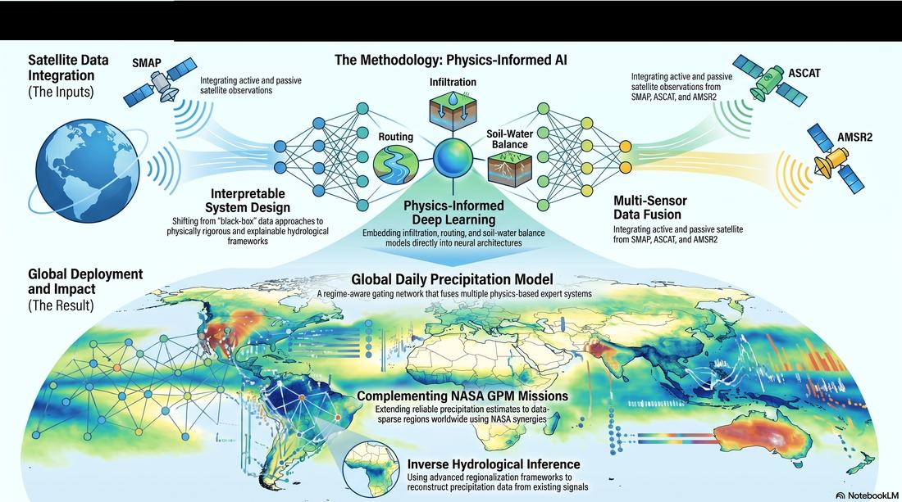
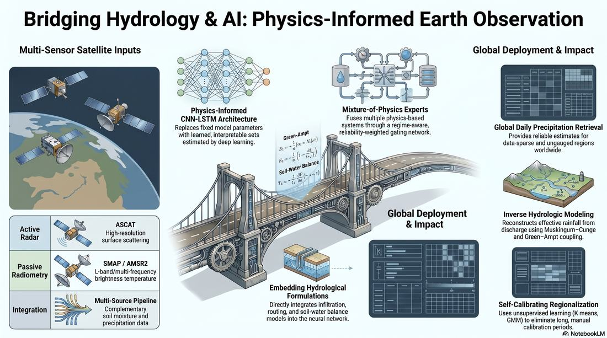
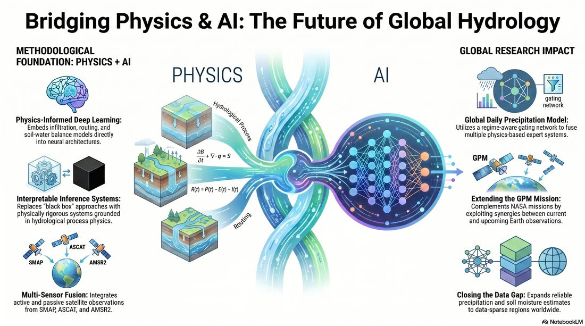
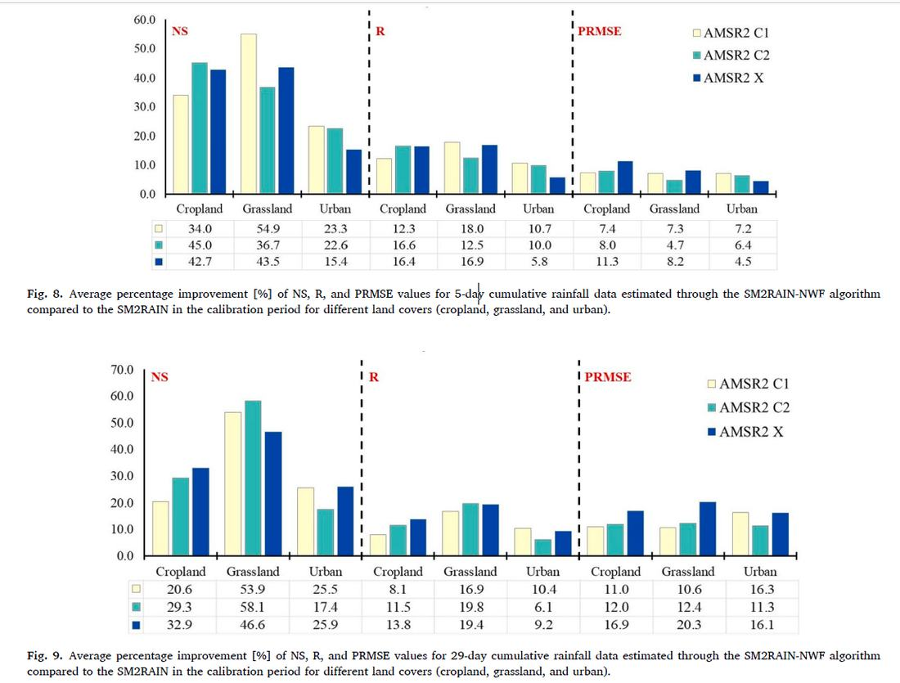
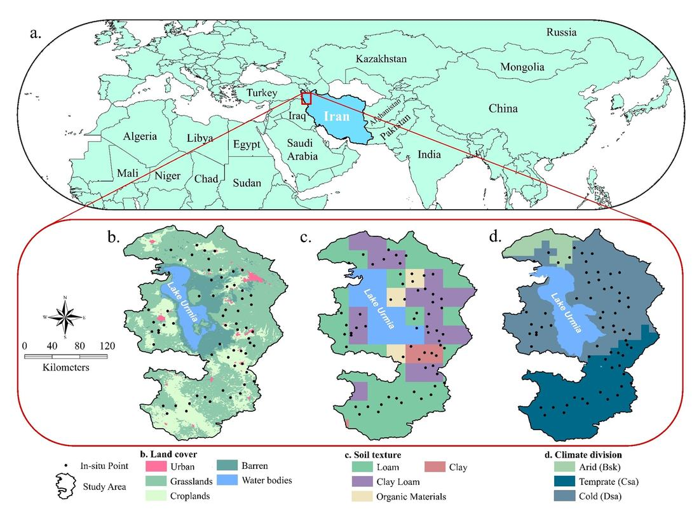
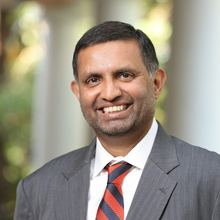
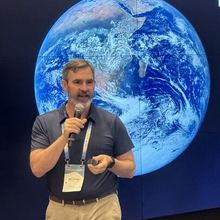
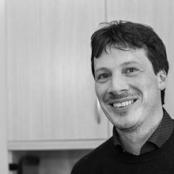
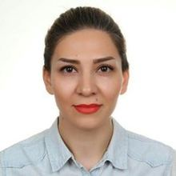
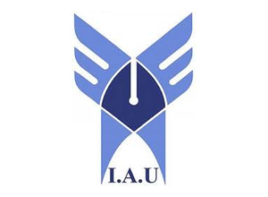

2026
Research Grant Awardee
Virginia Space Grant Consortium (VSGC) / NASA
Competitive research funding supporting satellite-based precipitation retrieval and soil moisture science.
Ph.D. Candidate · Johns Hopkins University
I work across satellite remote sensing, numerical hydrological modeling, and machine learning — including foundation models — to estimate precipitation and soil moisture from space. My models embed infiltration, routing, and soil-water balance physics directly into learned, interpretable systems, and are built to work globally, including where rain gauges do not reach.
Recognition
Competitive research funding and recognition for peer-review contributions to the field.
Virginia Space Grant Consortium (VSGC) / NASA
Competitive research funding supporting satellite-based precipitation retrieval and soil moisture science.
Vadose Zone Journal
Selected for exceptional peer-review contributions, one of eleven journals served as reviewer.
Research focus
From algorithm development to global-scale deployment — physical rigor first, learning second.
Soil moisture, precipitation, evapotranspiration, and terrestrial hydrology from SMAP, ASCAT, and AMSR2.
Deep learning architectures with hydrological formulations embedded as interpretable, constrained components.
Drought–flood transitions and precipitation reconstruction in data-scarce regions worldwide.
Foundation-model-driven validation, downscaling, and data assimilation for Earth observation products.
Flagship project
Multiple physics-based expert systems — Green-Ampt infiltration, Muskingum-Cunge routing, soil-water balance — fused through a regime-aware gating network that selects the right expert for each hydroclimatic regime.


Method
Rather than retrieving rainfall from the top down, SM2RAIN-NWF and its successors read rainfall out of the soil's own water balance — inverting the hydrological process to recover the forcing that produced it.
Latest
I welcome collaboration on physics-informed retrieval algorithms, satellite soil moisture validation, and precipitation reconstruction — and I am always glad to review for journals in the field.
About · Doctoral research
Supporting GPM through NASA multi-mission observations — my dissertation at Johns Hopkins, advised by Venkataraman Lakshmi.
Satellite soil moisture holds an indirect record of the rainfall that produced it — but reading rainfall back out of that record is an ill-posed inverse problem. Soil moisture also responds to drainage, evapotranspiration, runoff, retrieval noise, and delayed land-surface response, and intense storms can leave a weak or even negative same-day signal.
My work makes that inversion tractable by constraining it with physics rather than replacing physics with a black box. Hydrological formulations — Green-Ampt infiltration, Muskingum-Cunge routing, analytical net water flux — stay intact inside learned architectures, while neural operators, graph attention networks, and geospatial foundation models supply the parameterization those formulations need in places where no gauge exists.
Increasingly the question is not just how much rain but how much to trust the answer — so recent work produces calibrated distributions rather than single numbers, and uses conformal risk control to retain only the retrievals that meet a stated error tolerance.

Interests
Physics-informed learning and geospatial foundation models sit at the centre; everything else follows from applying them to real Earth observations.
Hydrological formulations embedded as constrained, interpretable components — with Fourier-domain operator learning, learned advection, and source–sink corrections for land-surface memory.
Frozen encoders such as Prithvi-EO-2.0 over HLS imagery to represent persistent land-surface conditions, and foundation-model-driven validation frameworks for Earth observation.
Probabilistic and ensemble retrieval through conditional flow matching, plus conformal risk control and selective prediction to bound error at a user-chosen tolerance.
SMAP, ASCAT, AMSR2, CYGNSS delay–Doppler maps, and emerging NISAR and OPERA products for soil moisture and land surface state.
Recovering rainfall from soil moisture, streamflow, and learned subsurface boundary conditions, with regionalization that transfers to ungauged basins.
Drought–flood transitions, heavy-event recall, and precipitation reconstruction across data-scarce regions worldwide.
Projects
Current work carried out as a Graduate Research Assistant at Johns Hopkins and the University of Virginia, plus earlier algorithm development and fieldwork.
A physics-informed learning framework that replaces fixed process-model parameters with learned, interpretable ones — keeping the hydrological process model intact while letting data determine how it is parameterized.
A selective prediction framework that reads CYGNSS delay–Doppler maps, observation geometry, and land-surface characteristics to identify which soil moisture retrievals are reliable, using conformal risk control to retain observations under a user-defined error tolerance.
A self-calibration framework that eliminates long calibration periods by regionalizing model parameters with unsupervised learning — K-means, Gaussian mixture models, agglomerative clustering, and Growing Neural Gas. Hold-out and leave-one-out protocols demonstrate improved transferability to ungauged regions.
Physically based infiltration modeling integrated into SM2RAIN for robustness under heterogeneous soil and antecedent-moisture conditions, with systematic sensitivity analysis and Monte Carlo uncertainty quantification across climate, soil, and land-cover regimes.
An inverse hydrologic framework that recovers effective rainfall from outlet discharge by coupling Muskingum–Cunge routing with Green–Ampt infiltration, with emphasis on river-network dynamics, runoff-generation processes, and data-scarce basins.
A global daily precipitation model that fuses multiple physics-based experts through a regime-aware, reliability-weighted gating network, with gauge-only magnitude supervision, multi-timescale sequence encoding, and domain adaptation for physically interpretable prediction in data-sparse and ungauged regions.
Foundations
Algorithm development and field measurement from the M.Sc. period that the current research builds on.

2020 — 2022
Building on the net water flux analytical model of Sadeghi et al. (2019), SM2RAIN-NWF estimates rainfall using satellite soil moisture as its only input — the algorithm the later work extends.

2019 — 2020
A field measurement campaign compared against AMSR2, SMAP L3, SMAP L4, and GLDAS, stratified by climate, soil texture, and land cover.
“What we observe is not nature itself, but nature exposed to our method of questioning.”
— Werner Heisenberg
Updated April 2026
Peer-reviewed journal articles and conference contributions. Filter by year or search titles, venues, and co-authors.
AGU Annual Meeting and IEEE IGARSS presentations
Most articles are available open access through the DOI links above. For anything paywalled, email me and I will send a copy.
Network
Across NASA Goddard, US Army ERDC, CNR Italy, University of Virginia, GIST, Wageningen, and Reading.

B. Howell Griswold, Jr. Professor, Whiting School of Engineering, Johns Hopkins University · President, Hydrology Section, AGU

Chief, Hydrological Sciences Laboratory, NASA Goddard Space Flight Center
Coastal and Hydraulics Laboratory, US Army Engineer Research and Development Center, Vicksburg, MS, USA

Director of Research, Research Institute for Geo-Hydrological Protection, CNR Italy
School of Environment and Energy Engineering, Gwangju Institute of Science and Technology (GIST)

Water Resources Control Engineer, California Water Resources Control Board, Sacramento, CA
Doctoral candidate, Wageningen University & Research
Postdoctoral Researcher, University of Reading, UK
Curriculum Vitae
Johns Hopkins University
University of Virginia
Ph.D., Geography & Environmental Engineering
Department of Environmental Health and Engineering · Baltimore, MD, USA
Dissertation: AI-Driven and Physics-Informed Rainfall Retrieval for Data-Scarce Regions: Supporting GPM Through NASA Multi-Mission Observations
Advisor: Venkataraman Lakshmi
Ph.D., Civil Engineering
Charlottesville, VA, USA · transferred to Johns Hopkins to continue Ph.D. studies

M.Sc., Civil Engineering — Water Resources Engineering & Management
Tehran, Iran · GPA 3.88 / 4.0
Thesis: Estimation of rainfall based on water balance equations and net water flux in soil using satellite-based soil moisture data
B.Sc., Civil Engineering
University of Virginia
Johns Hopkins University
Get in touch
Happy to hear about collaborations, data sharing, and reviewing requests.
If you have a keen interest in the intersection of climate change, satellite remote sensing, and hydrological modeling, I am glad to talk about joint work, data, and code.